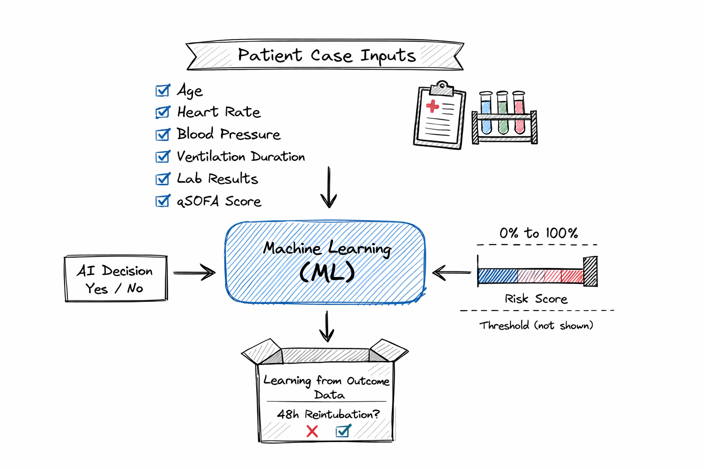

You will see an AI risk score (probability) that estimates the chance of reintubation within 48 hours if the patient is extubated now. No threshold marker is shown.
Key idea: The AI provides a continuous risk signal (e.g., 12% vs 62%). You decide how to use it along with clinical judgment.
The AI reads only the information shown in the survey case table (examples: age, vitals, ventilation duration, labs, qSOFA). It was trained on historical ICU cases labeled by whether 48-hour reintubation occurred.

Diagram: patient inputs → ML → risk score (0–100%).
| Risk level | How to use it |
|---|---|
| Low (example: 0–15%) | AI suggests low concern based on recorded inputs. Still verify stability and readiness. |
| Intermediate (example: 15–35%) | Uncertainty is often higher. Re-check missing clinical factors and consider additional evidence. |
| High (example: >35%) | AI suggests higher concern. Consider whether risks are modifiable or whether more time/support is needed. |
These ranges are examples for intuition; the survey does not provide a threshold.
| Term | Meaning |
|---|---|
| AI risk / probability | Estimated chance (0–100%) of 48-hour reintubation if extubated now, based on displayed inputs. |
| Discrimination | How well the model ranks higher-risk cases above lower-risk cases (e.g., AUROC). |
| Calibration | Whether predicted percentages match observed rates in similar patients. |
| Dataset shift | Patients/practice differ from training data; performance can change. |
Questions about the survey interface or AI output: tdktrang@vt.edu
Last updated: 2026-02-24